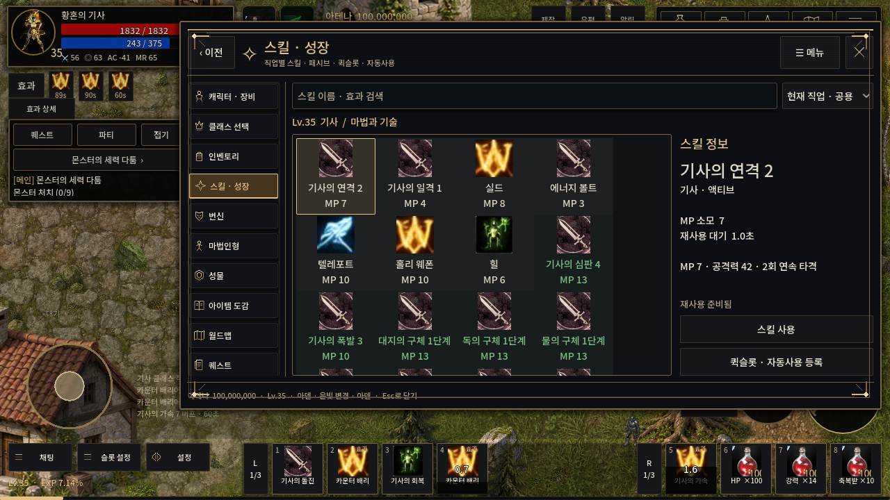
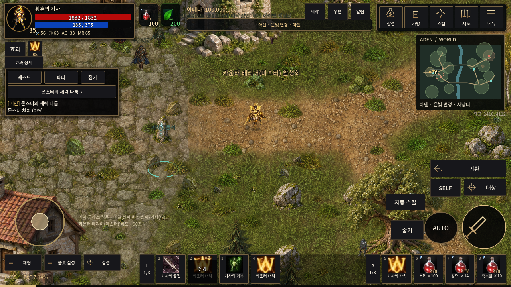
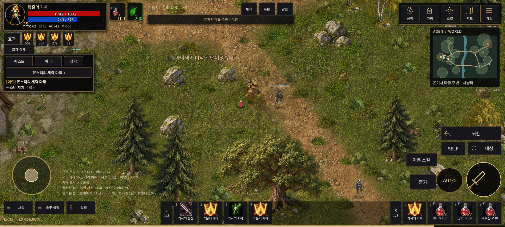

전체 배치와 슬롯 동선 비교
공식 가이드의 공개 캡처를 원격 URL로 표시합니다. 원본 이미지는 저장소나 게임 자산에 포함하지 않았습니다. 최신 한국 서비스와 완전히 같은 화면이라는 의미는 아닙니다.
 일본 공식 가이드 — 오른쪽 스킬 상세, 하단 중앙 4칸/오른쪽 4칸, 각 3그룹.
일본 공식 가이드 — 오른쪽 스킬 상세, 하단 중앙 4칸/오른쪽 4칸, 각 3그룹.

TWILIGHT 실제 실행 — 기존 스킬 상세, 직접 슬롯 등록, 좌우 독립 그룹 전환.

1280×720 HUD — 상태, 퀘스트/파티, 조이스틱/채팅, 슬롯, 실제 전투 조작, 미니맵.

2400×1080 — 좌우 외곽 유지와 넓은 중앙 시야. 지역명/대상 정보 겹침 방지.
확인된 배치·추정/적응 설계·미지원 기능 구분
Godot 4.7.2 / Compatibility / Linux llvmpipe. 실제 모바일 기기의 성능과 입력 검증은 별도입니다.